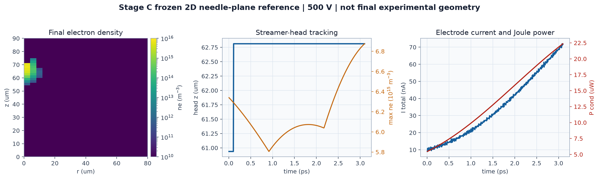
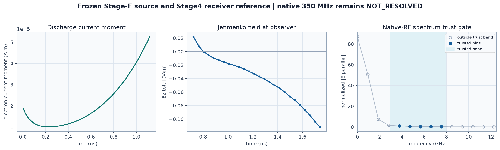
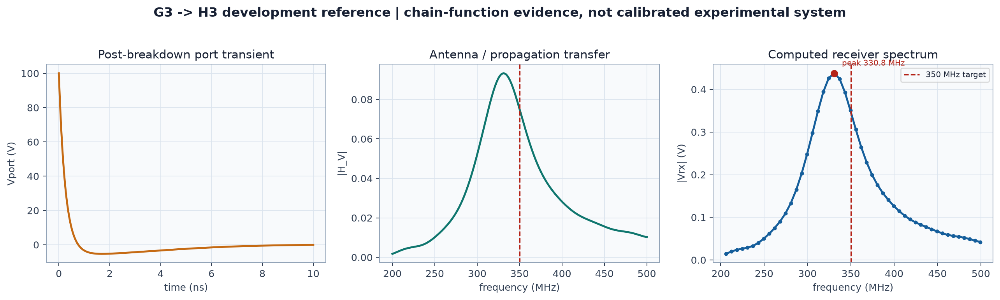
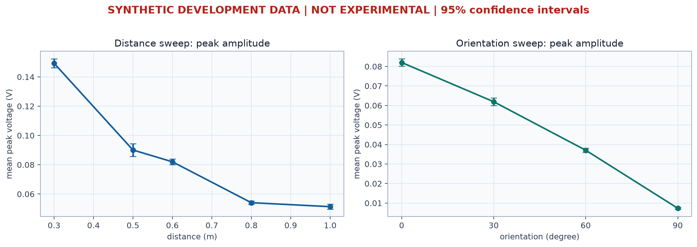

博士课题子方向 1 · 阶段进展
微间隙击穿放电
多物理仿真工具链构建
从电极结构到无线接收的仿真与验证平台
目前已完成正式仿真工具搭建并发布 microgap-rf v0.1.0，
后续可直接围绕电极结构开展正式仿真与实验闭环。
基于可调控微间隙击穿放电的多机制无线传感方法研究1 / 15
研究问题
子方向 1 到底要解决什么问题
电极几何 / 曲率 / 材料 / 界面
↓
局部电场增强
↓
击穿起始与流注发展
↓
放电电流 / Joule 能量
↓
RF 信号与接收稳定性
Q1 结构为何改变放电稳定性？
把针尖曲率、间隙与界面变化落实到局部场、起始位置和流注传播。
Q2 结构为何改变无线信号？
区分放电自身宽带辐射、击穿后端口响应，以及天线/传播的选频作用。
Q3 如何解释实验变化？
将接收端的频率、幅值和重复性追溯到电极、放电、电流和传播过程。
目标：建立“结构变化 → 物理过程 → 无线读出”的可检验证据链2 / 15
已形成的科研能力
七个计算模块已贯通
① 电场实际电极的局部场增强、高场区与潜在起始位置
② 流注击穿发展、电子/离子、空间电荷与流注头
③ 电流 / 能量电极电流、Joule 热与导电通道状态
④ 原生 RF瞬态电流与空间电荷产生的宽带电磁信号
⑤ 热通道 / RLC击穿后的端口瞬态与电路选频
⑥ 电磁传播天线、传播、接收器与接收波形
⑦ 实验验证与 VNA、示波器、距离和方向数据比较
结果可追溯每个工况保留输入、版本、运行状态和结果来源
已经形成从“电极结构”到“接收端信号”的连续仿真链。
已完成的是研究能力与证据链；真实实验验证仍待开展3 / 15
平台工作方式
同一放电过程，沿两条信号路径追踪到接收端
实际电极
→
COMSOL
局部电场
局部电场
→
二维流注
代表工况
代表工况
↔
三维流注
非轴对称关键工况
非轴对称关键工况
放电源
空间电荷
电流
Joule 能量
路径 A：原生宽带 RF
电流矩 → Jefimenko 场 → 原生 GHz 接收参考
350 MHz 原生贡献未解决路径 B：击穿后端口响应
热通道 → RLC → 天线 / 全波传播 → 接收器
350 MHz 开发参考链真实测量：电流 / VNA / 示波器 / 几何 / 校准 / 不确定度
→
仿真—实验比较与差异记录
说明：实际微电极 COMSOL 工作仍在独立推进；三维与全波计算调用外部求解器。
不同机制不混为同一物理来源4 / 15
案例 1 · 电极结构如何影响放电
二维针—板参考工况已能输出“场—流注—电流—能量”

局部电子密度与空间分布
流注头位置与演化
电极电流与 Joule 功率
Data source: Stage C frozen 2D needle-plane reference；500 V；本地冻结结果。该工况用于能力展示，不是论文 1 最终实验结构。
下一步：替换为不同针尖曲率、间隙和界面条件，保持同一组输出指标5 / 15
案例 2 · 放电如何转化成原生 RF
从电流矩到观测场，并对可解释频带设置可信门

何时产生信号
跟踪放电电流矩随时间变化。
跟踪放电电流矩随时间变化。
观测点看到什么
用 Jefimenko 关系计算电磁场时域响应。
用 Jefimenko 关系计算电磁场时域响应。
哪些频率可解释
Stage4 当前可信带约 2.94–7.97 GHz；350 MHz 不在可信带。
Stage4 当前可信带约 2.94–7.97 GHz；350 MHz 不在可信带。
Data source: Stage-F frozen source/Jefimenko result + H4 Stage4 numerical receiver reference。
NATIVE_RF_350MHZ = NOT_RESOLVED6 / 15
案例 3 · 几百 MHz 信号的系统形成路径
端口瞬态经过天线与传播结构选频后形成接收谱

开发验证案例：证明“击穿端口 → 天线/传播 → 接收端”的计算链可运行；尚未按真实实验系统完成 VNA、结构和幅值标定。
Data source: G3 frozen port transient + H3 development full-wave transfer/received spectrum；正式比较带 200–500 MHz。
当前可研究“系统为何偏好某一频段”，不能声称已验证实验中的 350 MHz 机制7 / 15
案例 4 · 距离、方向、重复性与不确定度
实验分析流程已跑通，等待替换为真实测量

重复测量统计
均值 / 标准差 / CV
均值 / 标准差 / CV
95% 置信区间
频率与幅值稳定性
频率与幅值稳定性
距离拟合
方向响应
方向响应
不确定度传播
差异记录
差异记录
Data source: Stage-I WP-I-B / WP-I-D synthetic dry-run；0.3–1.0 m、0–90°、90 个事件。仅验证工具功能，不代表实验规律。
SYNTHETIC_DRY_RUN · NOT EXPERIMENTAL DATA8 / 15
论文 1 直接用途
每个实验变量都对应可量化的物理输出
| 论文 1 研究任务 | 工具输出 | 可形成的论文证据 |
|---|---|---|
| 针尖曲率、间隙与电极形貌 | Emax、高场区、field enhancement | 结构改变击穿起始条件的定量依据 |
| 不同电极结构的放电发展 | 流注头、空间电荷、桥接时序 | 结构—传播—击穿过程的机制比较 |
| 放电稳定性 | 电流、Joule 能量、特征时间、重复性 | 稳定性差异对应的放电过程证据 |
| 无线可读出特征 | 原生 RF 频谱、端口谱、接收器响应 | 区分源机制与系统选频作用 |
| 距离与方向实验 | 衰减趋势、方向响应、CV、95% CI | 可读距离与重复性的统计证据 |
| 材料、界面与涂层 | 实验条件分组 + 可核验模型参数比较 | 材料因素与几何/放电因素的分离分析 |
论文证据链：结构 → 场 → 放电 → 电流 / RF → 实验
工具不是论文结论本身，而是把各层证据连接起来9 / 15
已完成工作量
正式研究平台已建立，不再从零搭建计算链
7
科研计算模块
电场、二维/三维放电、原生 RF、热/RLC、全波传播、实验验证。
466
轻量分析测试通过
覆盖输入处理、物理接口、频谱、验证、报告与状态边界。
10/10
数值模块测试通过
核心数值计算可重复构建与执行。
75 项端到端轻量检查
从环境、输入到结果和报告的最小流程已重复验收。
microgap-rf v0.1.0 正式发布
结果保留输入来源、版本和状态；新实验可按既定格式接入。
科研意义：工况可重复、阶段参数可追踪、历史结果不覆盖，后续工作量集中到结构扫描与实验闭环。
计数来源：v0.1.0 发行验收记录（466 pass；10/10 pass；75 pass）。
工作量体现为完整物理链和可复现证据体系，而非单一算例10 / 15
阶段边界
框架问题已解决，下一步转向真实结构和真实测量
已经解决
- 从局部场到接收端的计算框架
- 二维主线与三维关键工况接口
- 原生 RF 与击穿后端口两条路径
- 距离、方向、重复性和不确定度流程
- 结果来源、模型状态和限制可追溯
下一步重点
- 完成实际针尖/箔片结构的 COMSOL 电场
- 建立曲率、间隙、材料和界面工况矩阵
- 导入真实电流、RF、VNA 与示波器数据
- 完成仿真—实验比较与不确定度分析
- 收束论文 1 的结构—放电—无线模型
下一阶段重点从“搭工具”切换为“用工具回答科研问题”。
真实实验验证仍为 PENDING_REAL_EXPERIMENT11 / 15
Appendix 1
模块与研究阶段对应关系
| 模块 | 研究作用 | 当前边界 |
|---|---|---|
| Stage B · COMSOL | 实际电极静电场、Emax、高场区 | 外部工具；实际微电极工作独立推进 |
| Stage C · 二维流注 | 代表工况的放电演化、电流、Joule | 框架可用；需换入论文 1 正式结构 |
| Stage D/E · 三维流注 | 非轴对称、几何不均匀关键工况 | Afivo 外部后端接口已建立 |
| Stage F · 原生 RF | 电流矩、Jefimenko 场、GHz 频谱 | 可信频带有限；350 MHz 未解决 |
| Stage G · 热/RLC/端口 | 击穿后通道与端口瞬态 | 开发参考链可用 |
| Stage H · 全波传播/接收 | 天线、S 参数、传播、接收波形 | openEMS 外部；幅值为数值参考 |
| Stage I · 实验验证 | VNA/示波器比较、重复性、不确定度 | 框架完成；真实数据未提供 |
外部求解器不包含在软件内部，但接口和数据交接已固定12 / 15
Appendix 2
正式工况需要准备的主要输入与输出
| 环节 | 主要输入 | 主要输出 |
|---|---|---|
| 电极场 | 几何、曲率、间隙、电压、材料/界面 | 电势、电场、Emax、场增强、高场区 |
| 二维/三维放电 | 场分布、气体条件、初始电荷、网格和时间设置 | 电子/离子、空间电荷、流注头、桥接状态 |
| 电流/能量 | 放电状态、边界电压、通道参数 | 导电/位移电流、Joule 功率、通道状态 |
| 原生 RF | 守恒电流、空间电荷、观察点 | 电流矩、时域场、频谱、可信频带 |
| 热/RLC/端口 | Joule 交接、通道电阻、回路参数 | Vport、Iport、端口频谱 |
| 传播/接收 | Tx/Rx 几何、距离、方向、频带 | S11、S21、传递函数、接收波形/频谱 |
| 实验验证 | VNA、示波器、几何、校准、参考面、不确定度 | 差异、重复性、置信区间、验证状态 |
真实输入必须保留单位、几何、仪器、校准与参考面信息13 / 15
Appendix 3
科学状态与本汇报数据来源
| 对象 | 工具状态 | 科学状态 |
|---|---|---|
| Stage-I 实验验证 | 流程就绪 | PENDING_REAL_EXPERIMENT |
| 350 MHz 系统 | 开发链就绪 | NOT_MEASURED |
| 原生 350 MHz RF | 分析链就绪 | NOT_RESOLVED |
| Stage5 全 Maxwell | 接口就绪 | FULL_MAXWELL_REFERENCE_PENDING |
| H4 接收绝对幅值 | 可计算 | NUMERICAL_REFERENCE_ONLY |
图表来源
- 案例 1：本地冻结 Stage C 二维针—板结果（场、诊断、电流）。
- 案例 2：发布树 Stage-F Jefimenko 结果与 H4 Stage4 接收参考。
- 案例 3：发布树 G3 端口结果与 H3 200–500 MHz 开发参考。
- 案例 4：发布树 Stage-I WP-I-D synthetic 统计结果。
Synthetic 数据只证明分析流程可工作，不是实验数据，也不能提升科学验证状态。
SOFTWARE RELEASED ≠ SCIENTIFICALLY VALIDATED14 / 15
子方向 1 · 下一阶段
实际电极结构 → 正式仿真 → 实验闭环
Step 1建立针尖 / 箔片实际几何与参数矩阵
Step 2计算 Emax、field enhancement 与高场区
Step 3选择代表结构进入二维 / 三维放电
Step 4输出 current、Joule 与 RF 指标
Step 5对接 45 MHz 稳定性、8–24 MHz 能量/RMS、距离与重复性实验
Step 6形成“结构参数 → 物理量 → 无线指标”的论文证据链
平台建设已完成；后续工作聚焦论文 1 的结构变量、真实测量和机制闭环。
microgap-rf v0.1.0
正式仿真平台已建立
基于可调控微间隙击穿放电的多机制无线传感方法研究15 / 15